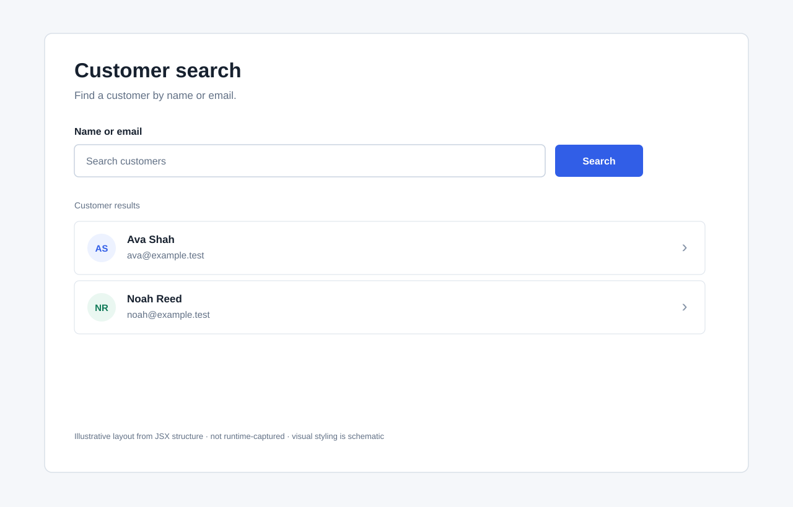

Save — valid fields
Update the mock record and return to Customer Detail with a saved message.
Follow the journey, then select any node or outcome to update the related screen detail below. One page for product, analysis, engineering, and architecture review.
Help an operator locate a customer record, inspect it, and optionally update the name or email. The sample proves the UI behaviour only; it does not define the business policy for customer maintenance.
Update the mock record and return to Customer Detail with a saved message.
Required/email browser validation blocks submit; the edit form stays open.
Discard the draft and return to Customer Detail without saving it.
Selecting a screen or branch updates the selected-state details below on this same page. Empty search results and a missing customer are different states: one belongs to Search; the other belongs to Customer Detail.
This panel updates in place. Start from a journey node above or select a state here; no separate screen or detail view is opened.

The sample JSX has no CSS. The layouts reconstruct page structure using schematic styling; they are not browser captures and do not claim pixel-level accuracy.